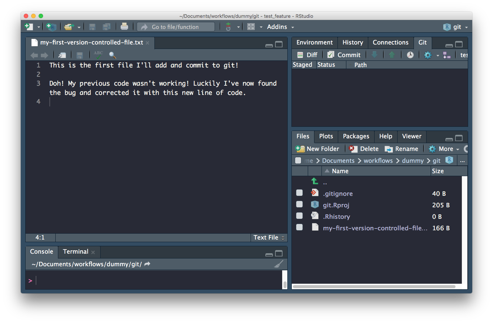
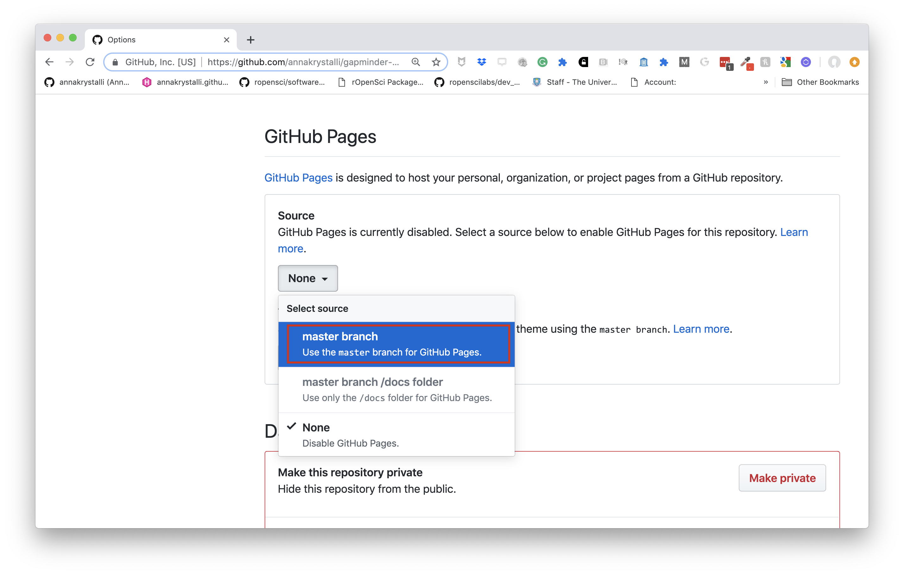
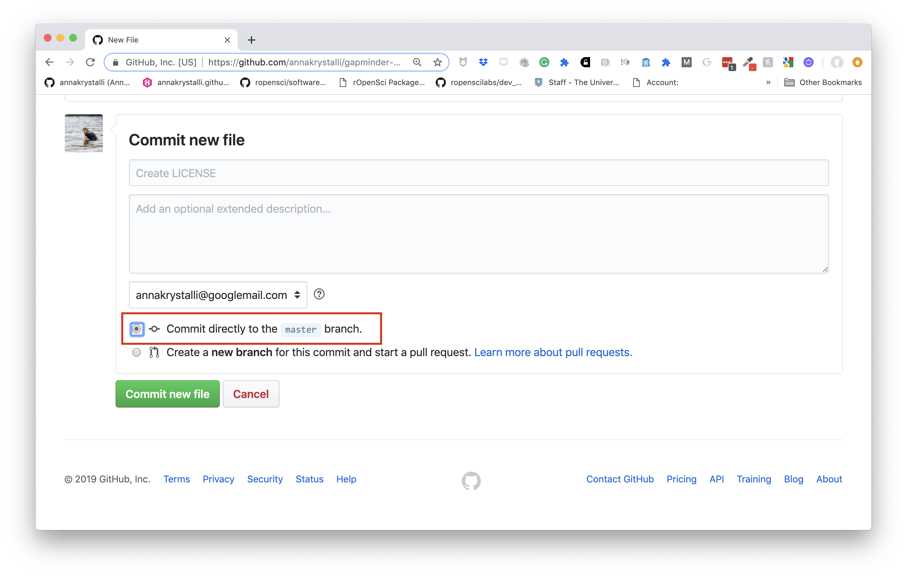
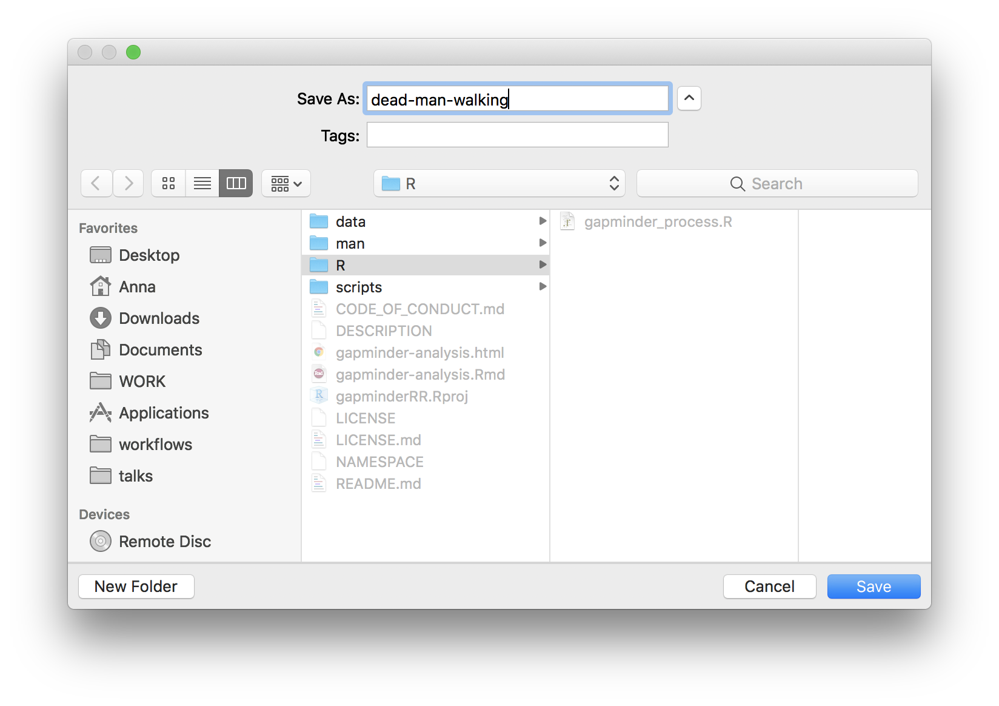

Version Control with Git
Last updated: 2019-04-09
Checks: 6 0
Knit directory: rrresearch/
This reproducible R Markdown analysis was created with workflowr (version 1.2.0). The Report tab describes the reproducibility checks that were applied when the results were created. The Past versions tab lists the development history.
Great! Since the R Markdown file has been committed to the Git repository, you know the exact version of the code that produced these results.
Great job! The global environment was empty. Objects defined in the global environment can affect the analysis in your R Markdown file in unknown ways. For reproduciblity it’s best to always run the code in an empty environment.
The command set.seed(20190216) was run prior to running the code in the R Markdown file. Setting a seed ensures that any results that rely on randomness, e.g. subsampling or permutations, are reproducible.
Great job! Recording the operating system, R version, and package versions is critical for reproducibility.
Nice! There were no cached chunks for this analysis, so you can be confident that you successfully produced the results during this run.
Great! You are using Git for version control. Tracking code development and connecting the code version to the results is critical for reproducibility. The version displayed above was the version of the Git repository at the time these results were generated.
Note that you need to be careful to ensure that all relevant files for the analysis have been committed to Git prior to generating the results (you can use wflow_publish or wflow_git_commit). workflowr only checks the R Markdown file, but you know if there are other scripts or data files that it depends on. Below is the status of the Git repository when the results were generated:
Ignored files:
Ignored: .DS_Store
Ignored: .Rhistory
Ignored: .Rproj.user/
Ignored: analysis/.DS_Store
Ignored: analysis/assets/
Ignored: assets/
Ignored: data/metadata/
Ignored: data/raw/
Ignored: demos/demo-rmd-0_files/
Ignored: demos/demo-rmd-1_files/
Ignored: demos/demo-rmd_files/
Ignored: docs/.DS_Store
Ignored: docs/assets/.DS_Store
Ignored: docs/assets/img/.DS_Store
Ignored: docs/demo-rmd-0_files/
Ignored: docs/demo-rmd-1_files/
Ignored: docs/demo-rmd-2_files/
Ignored: docs/demo-rmd-3_files/
Ignored: docs/demo-rmd_files/
Ignored: docs/index-demo-pre_files/
Ignored: figure/
Ignored: install.R
Ignored: rmd/
Ignored: slides/libs/
Unstaged changes:
Modified: analysis/_site.yml
Modified: render-other.R
Note that any generated files, e.g. HTML, png, CSS, etc., are not included in this status report because it is ok for generated content to have uncommitted changes.
These are the previous versions of the R Markdown and HTML files. If you’ve configured a remote Git repository (see ?wflow_git_remote), click on the hyperlinks in the table below to view them.
| File | Version | Author | Date | Message |
|---|---|---|---|---|
| html | 0e2d0ed | Anna Krystalli | 2019-04-09 | add icons to navbar |
| html | 3339a89 | Anna Krystalli | 2019-04-09 | update navbar in docs |
| html | cd7663f | Anna Krystalli | 2019-04-09 | update site yml |
| Rmd | 9cbb0e8 | Anna Krystalli | 2019-04-09 | adapt git |
| html | 00ad4f1 | Anna Krystalli | 2019-04-09 | update docs |
Background
Hands up - who has heard of version control software?
What do you think it does?
What is Version control? ü§î
The management of changes to documents, computer programs, large web sites, and other collections of information.
Examples:
- Numbering of book editions
- Wikipedia’s Page history
Where did it come from?
The need for a logical way to organize and control revisions has existed for almost as long as writing has existed, but revision control became much more important, and complicated when the era of computing began
Elements of a Version Control system
Changes are usually identified by a number or letter code, termed the “revision number”
Each revision is associated with a timestamp and the person making the change.
Only changes to a file are recorded rather than saving a whole new copy.
Revisions can be compared, restored, and with some types of files, merged.
What is git? ü§î
Open source (free to use) Version control software. Usually accessed via the command line, or a client program.

Where did it come from?
Git development began in 2006 after many developers of the Linux kernel gave up access to BitKeeper (at the time the best but proprietary)
Linus Torvalds on the name git:
"I’m an egotistical bastard, and I name all my projects after myself. First ‘Linux’, now ‘git’
More on the name in the source code original readme file
Why use it in research?
Exhibit A

Exhibit B

What is GitHub ü§î

A website that allows you to store your Git repositories online and makes it easy to collaborate with others. They also provide other services like issue (bug) tracking and wikis. Similar services are GitLab and BitBucket.
Why use it in research:
To enable collaboration and track contributions


- Acts as a remote back-up
- Facilitates transparency
- Facilitates project management
- Facilitates sharing and collaboration
- Super-charges innovation by Open Sourcing Science
Anatomy of GitHub Repo
Readme files. Create a
README.mdfile to explain what your project is, and how to install and use it.README.mdis the file that is automatically displayed when you open a GitHub repo.- License. Without some sort of licence, the contents of the repository are technically closed. Some allow users of the code to do anything they like with their code - these are known as permissive licences. Examples are the MIT Licence or Apache.
- https://choosealicense.com/ - does what it says on the tin and helps you choose a licence. Here are some resources to help you choose:
- https://tldrlegal.com/ - plain english explanations of licences in bullet form.
Contributing guide - make a file called
CONTRIBUTING.mdand guidelines for contributors so they know what they should do if they want to help you out.Code of Conduct - good projects have codes of conduct to make sure that people are treated well. Github has an Code of Conduct wizard to make it easy to add one.
Issues - use GitHub issues to record and discuss tasks.
Git, Github & Rstudio
Before: git only through the terminal

Rstudio & usethis to the rescue!
Rstudio + usethis üì¶ == heavenly Git & GitHub
- Initialise Rstudio project with Git by just checking a box!
- Forgot to? use
usethis::use_git()
- Forgot to? use
visual panel to easily see the status of all your files
interactive navigation through file version history
Demo
How does Git work?
When a local directory becomes initialised with git, a hidden .git folder is added to it.
it’s now called a repository
New copies of files you tell git to track will be added to that
.gitfolder.After adding, git will track any modifications to those files
first commit - whole file added
- Any file unknown to git will have a yellow ? box next to it.

- The first time you commit a file you are adding it to
.git, effectively telling it to start tracking the file

second commit - only difference highlighted
All changes have been committed so the git panel is clear

Enough theory, how about in practice!
üíª Configure git & GitHub
Configure git
First, git needs to know who you are so your commits can be attributed to you. usethis to the rescue again!
Check your configuration
Set your configuration
Use your github username and and the email you used to sign-up on GitHub
üö¶ Set up GITHUB PAT
To authenticate with GitHub, you’ll also need a Personal Authorisation Token (PAT).
will open up the GitHub panel to generate your PAT.

Copy it and paste it into your .Renviron file as system variable GITHUB_PAT.
Use edit_r_environ() to open and edit your .Renviron file
Turn our project into a repository
If you didn’t initialise git at the beginning of your project, you can do so now with:
This however commits everything in one go. So not ideal! I recommend using git from the start of every project.
üö¶ Commiting files
In our project, let’s have a look at the Rstudio Git tab. It shows all the files currently in the folder. The yellow ? indicates none of the files have been added to git yet.
Add files
To commit changes in a file just select it in the git pane. When changes to a file are commited for the first time, the whole file is indicated as Added (green A).
Commit changes
Click on commit and write an appropriate commit message:
üö¶ Create a README
Our repository also needs a README. We only need a simple plain markdown (.md) file for our README.
We can create a template using usethis::use_readme_md()
Edit README
Adapt the template, adding a short description about your project.
Add and commit your new README
üö¶ Create repository on GitHub
Create repository
Now that we have set up a GITHUP_PAT, we can use function usethis::use_github() to create a GitHub repository for our project:
push files
Click on the ⬆️ button on the Git tab to push our changes up to our newly minted repository
Let‚Äôs go have a look at the history üïí
üö¶ Tracking changes
Making a change to our gapminder-analysis.Rmd
In the last plot of your
.index.Rmd, see if you can add a smooth for each continent to generate the plot below (should be just one extraggplot2function added to the plot). Look for the appropriategeom_*function.See also if you can include an interactive
plotlyversion
| Version | Author | Date |
|---|---|---|
| c3260c9 | Anna Krystalli | 2019-04-09 |
Commit your changes
On the commit window:
Have a look at the differences
Have a look at the history
üö¶ Host content on GitHub
Let’s head to the repo and have a look at what we’ve shared. To host our html content on GitHub, we need to enable gh-pages in our repository.
Go to repo Settings
Enable gh-pages

Review setup

Ensure the Enforce HTTPS option is selected.
Click on the link displayed and go check out your work!
Copy the link. In the main repo page, edit the page details at the top and paste copied the url in the website field.
üö¶ Making changes on GitHub
We can also create new documents and edit existing ones on GitHub.
Create LICENSE
Let’s create also create a LICENSE in our repository.
Click on New File
Start typing LICENSE
A choose license template will button will pop up on the right. Click on it.
Choose license
On the left side panel, choose the MIT License
Review licence
Review the details in the license. Scroll down to commit it
Commit License
Commit the LICENSE directly to your master branch

Once commited, the LICENSE file should be visible in the repo
Add link to analysis index.html to README
Let’s edit the README.md on GitHub to add
Commit the changes directly into the master again.
üö¶ Pull changes locally
Finally, let’s pull the changes back down to our local repository by clicking the ⬇️ button on the Git tab.
üö¶ Deleting files
Create a new file, any type of file. 
Commit it.
Delete it
Commit the deletion
Look back through the history
.gitignore
There may be files that you don’t want to commit to git, e.g.
data files that are too large
documents with sensitive information (eg authorisation tokens etc)
intermediate files that you don’t need to save copies of.
Tell git to ingnore them by adding them to the
.gitignorefile.
gitignore regex
You can use regex in .gitignore files to ignore files according to a pattern.
*.htmlwill ignore any file ending in.htmlprefix “!” which negates the pattern
data/* !data/commit-this.csv
Git tips
- commit early, commit often
- commit logical bits of work together
- write meaninful messages
Never forget

R version 3.5.2 (2018-12-20)
Platform: x86_64-apple-darwin15.6.0 (64-bit)
Running under: macOS Mojave 10.14.3
Matrix products: default
BLAS: /Library/Frameworks/R.framework/Versions/3.5/Resources/lib/libRblas.0.dylib
LAPACK: /Library/Frameworks/R.framework/Versions/3.5/Resources/lib/libRlapack.dylib
locale:
[1] en_GB.UTF-8/en_GB.UTF-8/en_GB.UTF-8/C/en_GB.UTF-8/en_GB.UTF-8
attached base packages:
[1] stats graphics grDevices utils datasets methods base
other attached packages:
[1] ggplot2_3.1.0 dplyr_0.8.0.1 gapminder_0.3.0
loaded via a namespace (and not attached):
[1] Rcpp_1.0.1 compiler_3.5.2 pillar_1.3.1
[4] git2r_0.24.0.9001 plyr_1.8.4 workflowr_1.2.0
[7] tools_3.5.2 digest_0.6.18 lubridate_1.7.4
[10] evaluate_0.13 tibble_2.1.1 gtable_0.2.0
[13] pkgconfig_2.0.2 rlang_0.3.1 rstudioapi_0.9.0
[16] yaml_2.2.0 xfun_0.5 emo_0.0.0.9000
[19] withr_2.1.2 stringr_1.4.0 knitr_1.22
[22] fs_1.2.7 rprojroot_1.3-2 grid_3.5.2
[25] tidyselect_0.2.5 glue_1.3.1 R6_2.4.0
[28] rmarkdown_1.12 purrr_0.3.2 magrittr_1.5
[31] whisker_0.3-2 backports_1.1.3 scales_1.0.0
[34] htmltools_0.3.6 assertthat_0.2.0 colorspace_1.4-0
[37] labeling_0.3 stringi_1.3.1 lazyeval_0.2.1
[40] munsell_0.5.0 crayon_1.3.4